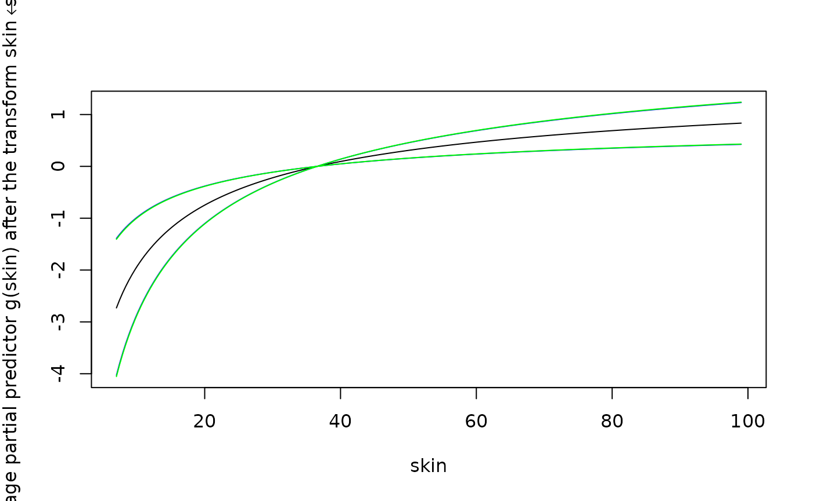

Using `glmBfp`: a binary regression example
Daniel Sabanés Bové
examples.RmdThis short vignette shall introduce into the usage of the package
glmBfp. For more information on the methodology, see Sabanés Bové and Held (2011). There you can also
find the references for the other tools mentioned here.
Pima Indians diabetes data
We will have a look at the Pima Indians diabetes data, which is
available in the package MASS:
library(MASS)
pima <- rbind(Pima.tr, Pima.te)
pima$hasDiabetes <- as.numeric(pima$type == "Yes")
pima.nObs <- nrow(pima)Setup
For women of Pima Indian heritage, seven possible predictors for the presence of diabetes are recorded. We would like to investigate with a binary regression, which of them are relevant, and what form the statistical association has – is it a linear effect, or rather a nonlinear effect? Here we will model possible nonlinear effects with the fractional polynomials.
First, we need to decide on the prior distributions to use. We are going to use the generalised hyper- priors for GLMs (Sabanés Bové and Held 2011). They are automatic and are supposed to yield reasonable results. We only need to specify which hyper-prior to put on the factor . One possible choice is the Zellner-Siow hyper-prior which says :
library(glmBfp)
## define the prior distributions for g which we are going to use:
prior <- InvGammaGPrior(a=1/2,
b=pima.nObs/2)## Warning in validityMethod(as(object, superClass)): density must be proper and
## normalized: (numerical) integral is 1.00000013575921
## (the warning can be ignored)This corresponds to the F1 prior in Sabanés Bové and Held (2011).
Another possible choice is the hyper- prior. For this there is no special constructor function, instead you can directly specify the log prior density, as follows:
## You may also use the hyper-g/n prior:
prior.f2 <- CustomGPrior(logDens=function(g)
- log(pima.nObs) - 2 * log(1 + g / pima.nObs))Stochastic model search
Next, we will do a stochastic search on the (very large) model space
to find “good” models. Here we have to decide on the model prior, and in
this example we use the sparse type which was also used in
the paper. We use a chainlength of
,
which is very small but enough for illustration purposes (usually one
should use at least
as a rule of thumb), and save all models (in general
nModels is the number of models which are saved from all
visited models). Finally, we decide that we do not want to use OpenMP
acceleration (this would parallelise loops over all observations on all
cores of your processor) and that we want to do higher order correction
for the Laplace approximations. In order to be able to reproduce the
analysis, it is advisable to set a seed for the random number generator
before starting the stochastic search.
set.seed(102)
time.pima <-
system.time(models.pima <-
glmBayesMfp(type ~
bfp(npreg) +
bfp(glu) +
bfp(bp) +
bfp(skin) +
bfp(bmi) +
bfp(ped) +
bfp(age),
data=pima,
family=binomial("logit"),
priorSpecs=
list(gPrior=prior,
modelPrior="sparse"),
nModels=1e3L,
chainlength=1e1L,
method="sampling",
useOpenMP=FALSE,
higherOrderCorrection=TRUE)) ## Starting sampler...
## 0%______________________________________________________________________________________________100%
## ----------
## Number of non-identifiable model proposals: 0
## Number of total cached models: 9
## Number of returned models: 9
time.pima## user system elapsed
## 0.132 0.003 0.135
attr(models.pima, "numVisited")## [1] 9We see that the search took ~seconds, and 9 models were found. Now, if we want to have a table of the found models, with their posterior probability, the log marginal likelihood, the log prior probability, and the powers for every covariate the and the number of times that the sampler encountered that model:
table.pima <- as.data.frame(models.pima)
table.pima## posterior logMargLik logPrior age bmi bp glu npreg ped skin
## 1 5.752526e-01 -265.8779 -11.849169 1 -0.5
## 2 4.036782e-01 -266.2321 -11.849169 2 -0.5
## 3 7.971175e-03 -270.1569 -11.849169 2 3
## 4 6.638447e-03 -268.2604 -13.928611 0 2 -0.5
## 5 6.134410e-03 -272.4983 -9.769728 2
## 6 3.250886e-04 -273.3564 -11.849169 3 2
## 7 2.089908e-20 -310.6396 -11.849169 2 -0.5
## 8 2.131992e-23 -317.5274 -11.849169 2 3
## 9 2.726801e-31 -339.8609 -7.690286Note that while frequency refers to the frequency of the
models in the sampling chain, thus providing a Monte Carlo estimate of
the posterior model probabilities, posterior refers to the
renormalised posterior model probabilities. The latter has the advantage
that ratios of posterior probabilities between any two models are exact,
while the former is unbiased (but obviously has larger variance).
Inclusion probabilities
The estimated marginal inclusion probabilities for all covariates are also saved:
## age bmi bp glu npreg ped skin
## 0.00 0.00 0.01 1.00 0.00 0.00 0.99Sampling model parameters
If we now want to look at the estimated covariate effects in the
estimated MAP model which has the configuration given in the last seven
columns of table.pima, then we first need to generate
parameter samples from that model:
## MCMC settings
mcmcOptions <- McmcOptions(iterations=1e4L,
burnin=1e3L,
step=2L)
## get samples from the MAP model
set.seed(634)
mapSamples <- sampleGlm(models.pima[1L],
mcmc=mcmcOptions,
useOpenMP=FALSE)##
## Taking the linear approximation method
## 0%______________________________________________________________________________________________100%
## ----------------------------------------------------------------------------------------------------
## Finished MCMC simulation with acceptance ratio 0.868With the function McmcOptions, we have defined an S4
object of MCMC settings, comprising the number of iterations, the length
of the burn-in, the thinning step (here save every second iteration),
here the acceptance rate was
).
Note that you can also get predictive samples for new data points via
the newdata option of sampleGlm. The result
mapSamples has the following structure:
str(mapSamples)## List of 5
## $ tbf : logi FALSE
## $ acceptanceRatio: num 0.868
## $ logMargLik :List of 5
## ..$ estimate : Named num -266
## .. ..- attr(*, "names")= chr "numeratorTerms"
## ..$ standardError : num [1, 1] 0.00237
## ..$ numeratorTerms : num [1:4500] 0.542 0.657 0.664 0.619 0.559 ...
## ..$ denominatorTerms : num [1:4500] 1 1 0.989 1 1 ...
## ..$ highDensityPointLogUnPosterior: num -266
## $ coefficients : num [1:3, 1:4500] -0.932 4.211 -5.46 -0.827 3.745 ...
## ..- attr(*, "dimnames")=List of 2
## .. ..$ : chr [1:3] "(Intercept)" "glu^1" "skin^-0.5"
## .. ..$ : NULL
## $ samples :Formal class 'GlmBayesMfpSamples' [package "glmBfp"] with 8 slots
## .. ..@ fitted : num [1:532, 1:4500] -2.29 2.55 -2.11 1.66 -1.6 ...
## .. .. ..- attr(*, "dimnames")=List of 2
## .. .. .. ..$ : chr [1:532] "1" "2" "3" "4" ...
## .. .. .. ..$ : NULL
## .. ..@ predictions : logi[0 , 0 ]
## .. ..@ fixCoefs :List of 1
## .. .. ..$ (Intercept): num [1, 1:4500] -0.932 -0.827 -0.932 -0.936 -1.073 ...
## .. .. .. ..- attr(*, "dimnames")=List of 2
## .. .. .. .. ..$ : chr "(Intercept)"
## .. .. .. .. ..$ : NULL
## .. ..@ z : num [1:4500] 5.32 5.44 7.19 5.08 5.57 ...
## .. ..@ bfpCurves :List of 2
## .. .. ..$ glu : num [1:327, 1:4500] -3.05 -3.02 -3.01 -2.99 -2.96 ...
## .. .. .. ..- attr(*, "scaledGrid")= num [1:327, 1] 0.56 0.567 0.57 0.574 0.581 ...
## .. .. .. .. ..- attr(*, "dimnames")=List of 2
## .. .. .. .. .. ..$ : NULL
## .. .. .. .. .. ..$ : chr "glu"
## .. .. .. ..- attr(*, "whereObsVals")= int [1:532] 62 318 40 251 113 88 55 313 197 163 ...
## .. .. ..$ skin: num [1:251, 1:4500] -3.67 -3.47 -3.28 -3.25 -3.11 ...
## .. .. .. ..- attr(*, "scaledGrid")= num [1:251, 1] 0.7 0.746 0.791 0.8 0.837 ...
## .. .. .. .. ..- attr(*, "dimnames")=List of 2
## .. .. .. .. .. ..$ : NULL
## .. .. .. .. .. ..$ : chr "skin"
## .. .. .. ..- attr(*, "whereObsVals")= int [1:532] 67 83 108 115 57 63 76 28 25 95 ...
## .. ..@ ucCoefs : list()
## .. ..@ shiftScaleMax: num [1:7, 1:4] 0 0 0 0 1 0 0 10 100 100 ...
## .. .. ..- attr(*, "dimnames")=List of 2
## .. .. .. ..$ : chr [1:7] "age" "bmi" "bp" "glu" ...
## .. .. .. ..$ : chr [1:4] "shift" "scale" "maxDegree" "cardPowerset"
## .. ..@ nSamples : int 4500It is a list with the acceptanceRatio of the
Metropolis-Hastings proposals, an MCMC estimate for the log marginal
likelihood including an associated standard error
(logMargLik), the coefficients samples of the
model, and an S4 object samples. This S4 object includes
the fitted samples on the linear predictor scale (in our
case on the log Odds Ratio scale), possibly predictions
samples, samples of the intercept (fixed), samples of
,
samples of the fractional polynomial curves (bfpCurves),
coefficients of uncertain but fixed form covariates
(ucCoefs), the shifts and scales applied to the original
covariates (shiftScaleMax) and the number of samples
(nSamples). You can read more details on the results on the
help page by typing ?"GlmBayesMfpSamples-class" in
R.
If we wanted to get posterior fitted values on the probability scale, we can use the following code:
## 1 2 3 4 5 6
## 0.1017081 0.8967206 0.1096366 0.7864968 0.1794264 0.1412198We can also analyse the MCMC output in greater detail by applying the
functions in the coda package:
library(coda)
coefMcmc <- mcmc(data=t(mapSamples$coefficients),
start=mcmcOptions@burnin + 1,
thin=mcmcOptions@step)
str(coefMcmc)## 'mcmc' num [1:4500, 1:3] -0.932 -0.827 -0.932 -0.936 -1.073 ...
## - attr(*, "dimnames")=List of 2
## ..$ : NULL
## ..$ : chr [1:3] "(Intercept)" "glu^1" "skin^-0.5"
## - attr(*, "mcpar")= num [1:3] 1001 9999 2
## standard summary table for the coefficients:
summary(coefMcmc)##
## Iterations = 1001:9999
## Thinning interval = 2
## Number of chains = 1
## Sample size per chain = 4500
##
## 1. Empirical mean and standard deviation for each variable,
## plus standard error of the mean:
##
## Mean SD Naive SE Time-series SE
## (Intercept) -0.9298 0.1144 0.001705 0.001812
## glu^1 3.8503 0.3963 0.005907 0.006548
## skin^-0.5 -4.0626 1.0093 0.015046 0.017079
##
## 2. Quantiles for each variable:
##
## 2.5% 25% 50% 75% 97.5%
## (Intercept) -1.158 -1.008 -0.929 -0.8514 -0.7113
## glu^1 3.085 3.581 3.846 4.0998 4.6522
## skin^-0.5 -6.053 -4.736 -4.057 -3.3781 -2.1071
autocorr(coefMcmc)## , , (Intercept)
##
## (Intercept) glu^1 skin^-0.5
## Lag 0 1.000000000 -0.198545301 0.22364820
## Lag 2 0.060585352 -0.021893505 0.02726208
## Lag 10 -0.009556659 0.011005546 0.02048678
## Lag 20 -0.008033578 0.001619819 -0.02348717
## Lag 100 0.009020242 -0.025143099 -0.01664317
##
## , , glu^1
##
## (Intercept) glu^1 skin^-0.5
## Lag 0 -0.198545301 1.000000000 0.033350565
## Lag 2 -0.015649028 0.102578846 -0.011644669
## Lag 10 -0.006802564 -0.007056528 -0.009870305
## Lag 20 0.025457688 -0.016328556 -0.004131432
## Lag 100 0.010054085 0.004816710 0.006559926
##
## , , skin^-0.5
##
## (Intercept) glu^1 skin^-0.5
## Lag 0 0.22364820 0.0333505649 1.0000000000
## Lag 2 0.05308624 0.0007788738 0.0863690518
## Lag 10 0.01053958 -0.0013760573 0.0004120856
## Lag 20 -0.02397061 0.0008594714 -0.0206584865
## Lag 100 -0.02560623 -0.0044481063 -0.0312199772
## etc.
plot(coefMcmc)
## samples of z:
zMcmc <- mcmc(data=mapSamples$samples@z,
start=mcmcOptions@burnin + 1,
thin=mcmcOptions@step)
plot(zMcmc)
## etc.Curve estimates
Now we can use the samples to plot the estimated effects of the MAP
model covariates, with the plotCurveEstimate function. For
example:
plotCurveEstimate(termName="skin",
samples=mapSamples$samples)
Model averaging
Model averaging works in principle similar to sampling from a single model, but multiple model configurations are supplied and their respective log posterior probabilities. For example, if we wanted to average the top three models found, we would do the following:
set.seed(312)
bmaSamples <-
sampleBma(models.pima[1:3],
mcmc=mcmcOptions,
useOpenMP=FALSE,
nMargLikSamples=1000)##
## Starting sampling ...
## Now at model 1 ...
## Taking the linear approximation method
## 0%______________________________________________________________________________________________100%
## ----------------------------------------------------------------------------------------------------
## Finished MCMC simulation with acceptance ratio 0.875
##
## Now at model 2 ...
## Taking the linear approximation method
## 0%______________________________________________________________________________________________100%
## -----------------------------------------------------------------------------------------------------
## Finished MCMC simulation with acceptance ratio 0.864
##
## Now at model 3 ...
## Taking the linear approximation method
## 0%______________________________________________________________________________________________100%
## ----------------------------------------------------------------------------------------------------
## Finished MCMC simulation with acceptance ratio 0.886
## look at the list element names:
names(bmaSamples)## [1] "modelData" "samples"
## now we can see how close the MCMC estimates ("margLikEstimate")
## are to the ILA estimates ("logMargLik") of the log marginal likelihood:
bmaSamples$modelData[, c("logMargLik", "margLikEstimate")]## logMargLik margLikEstimate
## 1 -265.8779 -265.8792
## 2 -266.2321 -266.2333
## 3 -270.1569 -270.1514
## the "samples" list is again of class "GlmBayesMfpSamples":
class(bmaSamples$samples)## [1] "GlmBayesMfpSamples"
## attr(,"package")
## [1] "glmBfp"Then internally, first the models are sampled, and for each sampled
model so many samples are drawn as determined by the model frequency in
the model average sample. The result is a list with two elements:
modelData is similar to the table.pima, and
contains in addition to that the BMA probability and frequency in the
sample, the MCMC acceptance ratios (which should be high). On the second
element samples, which is again of class
GlmBayesMfpSamples, the above presented functions can again
be applied (e.g. plotCurveEstimate).